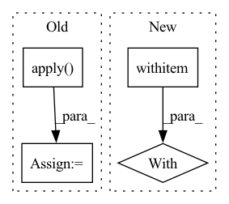

Pattern ID :12942
Before Change
)
]
output_shape = [x.shape[0], self.weight.shape[0]] + output_shape
empty = _NewEmptyTensorOp.apply( x, output_shape)
if self.training:
// https://github.com/pytorch/pytorch/issues/12013
assert not isinstance(
self.norm, torch.nn.SyncBatchNormAfter Change
// 2. features needed by exporting module to torchscript are added in PyTorch 1.6 or
// later version, `Conv2d` in these PyTorch versions has already supported empty inputs.
if not torch.jit.is_scripting():
with warnings .catch_warnings(record=True):
if x.numel() == 0 and self.training:
// https://github.com/pytorch/pytorch/issues/12013
assert not isinstance(
self.norm, torch.nn.SyncBatchNormIn pattern: SUPERPATTERN
Frequency: 3
Non-data size: 4
Instances Fragment ID: 43604770
Project Name: stevewongv/instanceshadowdetection
Commit Name: 52f5f2cdcdb670b07efe4086abf503d9d50753c5
Time: 2022-07-28
Author: steve.w.git@icloud.com
File Name: detectron2/layers/wrappers.py
M Class Name: Conv2d
N Class Name: Conv2d
M Method Name: forward(2)
N Method Name: forward(2)
M Parent Class: torch.nn.Conv2d
N Parent Class: torch.nn.Conv2d
M File Name: detectron2/layers/wrappers.py
N File Name: detectron2/layers/wrappers.py
M Start Line: 61
M End Line: 87
N Start Line: 105
N End Line: 115
Before Change
quantized_inputs = [quantized_inputs]
// Quantize the parameters
quantized_inputs[0] = ParameterQuantizer.apply( quantized_inputs[0], self,
*encoding_list_for_params)
// clone() the outputs of Custom function to avoid incorrect gradient calculation for in-place modification
// of view (view is created since Custom function"s forward return input as-is)
quantized_inputs[0] = quantized_inputs[0].clone()
// Call the forward of the wrapped module
wrapped_output = self._module_to_wrap(*quantized_inputs)After Change
if isinstance(quantized_inputs, torch.Tensor):
quantized_inputs = [quantized_inputs]
with self ._quantize_params(quantized_inputs):
// Call the forward of the wrapped module
wrapped_output = self._module_to_wrap(*quantized_inputs)
// Quantize the outputs
// pylint: disable=all Fragment ID: 43604773
Project Name: quic/aimet
Commit Name: c9cadfe0cede11da01757e9e189988fa912b05dd
Time: 2022-05-19
Author: quic_kyunggeu@quicinc.com
File Name: TrainingExtensions/torch/src/python/aimet_torch/qc_quantize_op.py
M Class Name: LearnedGridQuantWrapper
N Class Name: LearnedGridQuantWrapper
M Method Name: forward(1)
N Method Name: forward(1)
M Parent Class: QcQuantizeWrapper
N Parent Class: QcQuantizeWrapper
M File Name: TrainingExtensions/torch/src/python/aimet_torch/qc_quantize_op.py
N File Name: TrainingExtensions/torch/src/python/aimet_torch/qc_quantize_op.py
M Start Line: 733
M End Line: 763
N Start Line: 737
N End Line: 751
Before Change
if this_tokenizer:
with this_tokenizer.as_target_tokenizer():
d = X.apply(
lambda x: tokenize_row(
x,
this_tokenizer,
prefix=("",) if task is SUMMARIZATION else None,
task=task,
custom_hpo_args=custom_hpo_args,
),
axis=1,
result_type="expand",
)
else:
this_tokenizer = AutoTokenizer.from_pretrained(
custom_hpo_args.model_path, use_fast=True
)After Change
global tokenized_column_names
with tokenizer .as_target_tokenizer():
d = X.apply(
lambda x: tokenize_row(
x,
tokenizer, Fragment ID: 43604774
Project Name: microsoft/flaml
Commit Name: cb9c7b0d1613eae1b573736a6ad0faf80b9054b2
Time: 2022-01-16
Author: liususan091219@users.noreply.github.com
File Name: flaml/nlp/utils.py
M Class Name: AnonimousClass
N Class Name: AnonimousClass
M Method Name: tokenize_onedataframe(5)
N Method Name: tokenize_onedataframe(4)
M Parent Class:
N Parent Class:
M File Name: flaml/nlp/utils.py
N File Name: flaml/nlp/utils.py
M Start Line: 177
M End Line: 209
N Start Line: 196
N End Line: 216